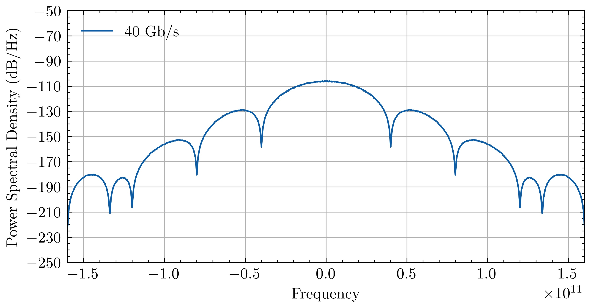
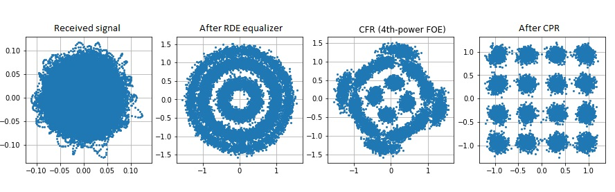
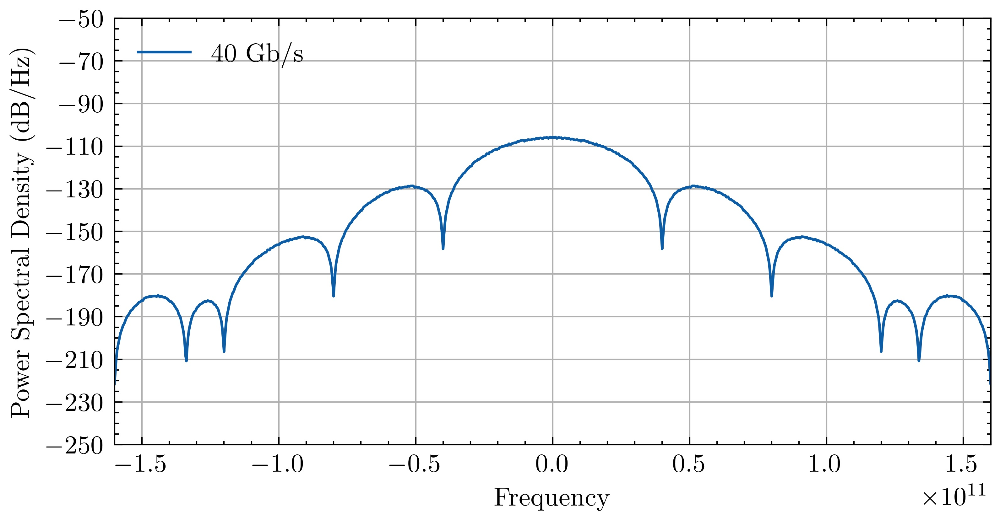
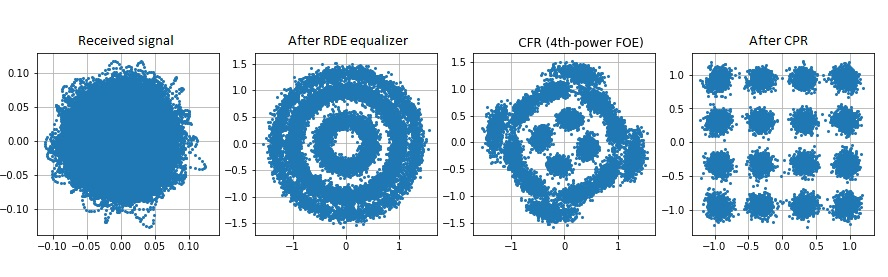

Welcome to OptiCommPy's documentation!
Note
This project is under active development.
OptiCommPy is a Python-based framework to simulate systems, subsystems, and components of fiber optic communication systems, for educational and research purposes.
 



{kind=link}
{kind=link}


Available features
Several digital modulations available (M-PAM, square M-QAM, M-PSK, OOK) to simulate IM-DD and coherent optical systems.
Numerical models to simulate optical transmitters, optical amplification, nonlinear propagation over optical fibers, and optical receivers.
CPU and GPU-based implementations of the split-step Fourier Method to simulate polarization multiplexed WDM transmission.
Standard digital signal processing (DSP) blocks employed in coherent optical receivers, such as:
Signal resampling.
Matched filtering.
Clock recovery.
Electronic chromatic dispersion compensation (EDC).
Several NxN MIMO adaptive equalization algorithms.
Carrier phase recovery algorithms.
For most of the cases, Numba is used to speed up the core DSP functions.
Evaluate transmission performance with metrics such as:
Bit-error-rate (BER).
Symbol-error-rate (SER).
Error vector magnitude (EVM).
Mutual information (MI).
Generalized mutual information (GMI).
Normalized generalized mutual information (NGMI).
Visualization of the spectrum of electrical/optical signals, signal constellations, and eyediagrams.
How can I contribute?
If you want to contribute to this project, implement the feature you want and send me a pull request. If you want to suggest new features or discuss anything related to OptiCommPy, please get in touch with me (edsonporto88@gmail.com).
Requirements/Dependencies
python>=3.2
numpy>=1.9.2
scipy>=0.15.0
matplotlib>=1.4.3
scikit-commpy>=0.7.0
numba>=0.54.1
tqdm>=4.64.1
simple-pid>=1.0.1
mpl-scatter-density>=0.7.0
Installation
Using pip:
pip install OptiCommPy
Cloning the repository from GitHub:
$ git clone https://github.com/edsonportosilva/OptiCommPy.git
$ cd OptiCommPy
$ pip install .
Documentation
We are continuously making efforts to improve the code documentation. You can find the latest documentation in opticommpy.readthedocs.io.
Citing this repository
Edson Porto da Silva, Adolfo Herbster, Carlos Daniel Fontes da Silva, & Joaquin Matres. (2023). edsonportosilva/OptiCommPy: v0.7.0-alpha (v0.7.0-alpha). Zenodo. https://doi.org/10.5281/zenodo.10304945
Examples
Package documentation
- Digital Communications Utilities
- Digital Signal Processing (DSP)
- Physical Models
- Models for optoelectronic devices (
optic.models.devices) - Models for fiber optic channels (
optic.models.channels) - Models for optical amplifiers (
optic.models.amplification) - Functions adapted to run with GPU (CuPy) processing (
optic.models.modelsGPU) - Advanced models for optical transmitters (
optic.models.tx)
- Models for optoelectronic devices (
- Plot Utilities
- General Utilities